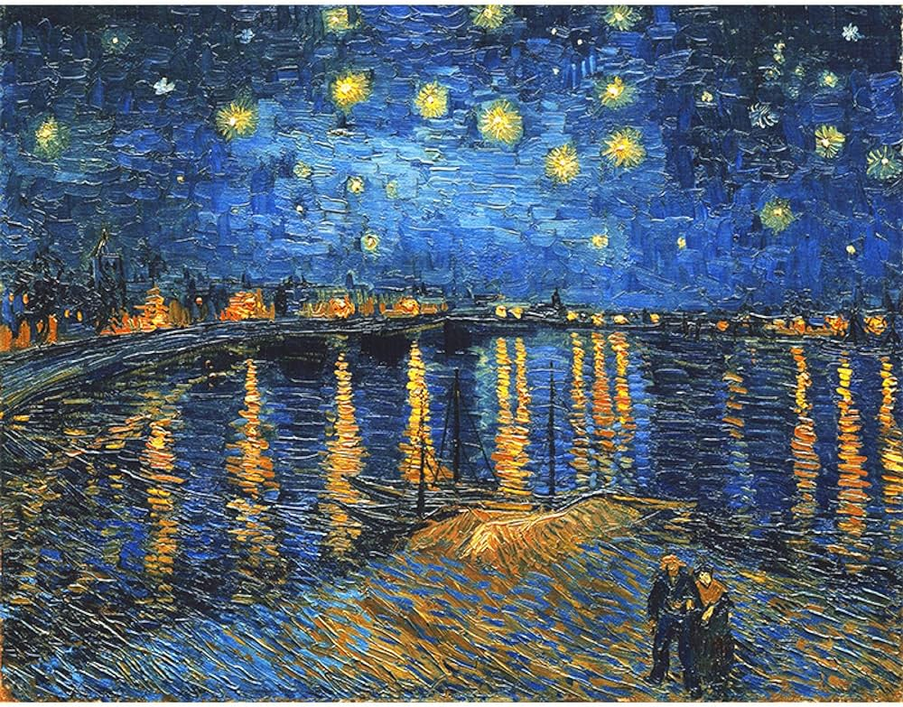

La musica (dal greco antico μουσική?, mousikḗ, "arte delle Muse") è l'arte di ideare e produrre, mediante l'uso di strumenti musicali o della voce, successioni strutturate di suoni semplici o complessi, che possono variare per altezza, per intensità e per timbro[1], organizzati secondo le dimensioni di melodia, armonia e ritmo.[2] È uno degli aspetti culturali universali di tutte le società umane. Il significato del termine musica non è comunque univoco ed è molto dibattuto tra gli studiosi per via delle diverse accezioni utilizzate nei vari periodi storici. Etimologicamente il termine musica deriva dall'aggettivo greco μουσικός/musikòs, relativo alle Muse, figure della mitologia greca e romana, riferito in modo sottinteso a tecnica, anch'esso derivante dal greco τέχνη/techne. In origine il termine non indicava una particolare arte, bensì tutte le arti delle Muse, e si riferiva a qualcosa di "perfetto".

L'arte nel suo significato più ampio comprende ogni attività umana – svolta singolarmente o collettivamente – che porta a forme di creatività e di espressione estetica, poggiando su accorgimenti tecnici, abilità innate o acquisite e norme comportamentali derivanti dallo studio e dall'esperienza. Pertanto, l'arte è un linguaggio, ossia la capacità di trasmettere emozioni e messaggi. Tuttavia non esiste un unico linguaggio artistico e neppure un unico codice inequivocabile di interpretazione, addirittura non esiste neppure un termine equivalente ad "arte" nella maggior parte delle lingue parlate[1]. Nel suo significato più sublime l'arte è l'espressione estetica dell'interiorità e dell'animo umano. Rispecchia le opinioni, i sentimenti e i pensieri dell'artista nell'ambito sociale, morale, culturale, etico o religioso del suo periodo storico. Alcuni filosofi e studiosi di semantica, invece, sostengono che esista un linguaggio oggettivo che, a prescindere dalle epoche e dagli stili, dovrebbe essere codificato per poter essere compreso da tutti, tuttavia gli sforzi per dimostrare questa affermazione sono stati infruttuosi. L'arte può essere considerata anche una professione di antica tradizione svolta nell'osservanza di alcuni canoni codificati nel tempo. In questo senso le professioni artigianali – quelle cioè che afferiscono all'artigianato – discendono spesso dal Medioevo, quando si svilupparono attività specializzate e gli esercenti arti e mestieri vennero riuniti nelle corporazioni. Ogni arte aveva una propria tradizione, i cui concetti fondamentali venivano racchiusi nella regola dell'arte, cui ogni artiere doveva conformarsi.
